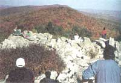
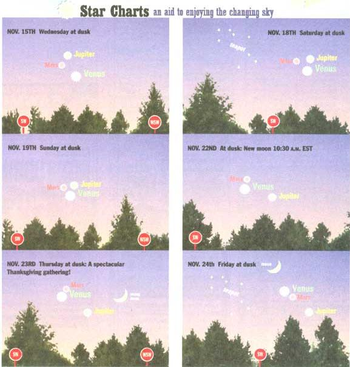

October not only brings us the holiday of Halloween this year, but also that nemesis of the superstitious, Friday the 13th. The day-date combination is considered unlucky because Friday is supposed to be the unluckiest day and 13 the unluckiest number (putting them together is, presumably, a double dose of bad luck). But why have Friday and the number 13 gained their ill reputation in the first place? The day itself is considered more than favorable to all who have shouted "T.G.I.F.!" at the end of their work week. And Friday is the holy day of the Moslem week. But an older tradition in Christianity would hold Friday the darkest day: After all, it is the day (in either 30 or 33 A.D. we now think) that Jesus was crucified.
Then there is the number. You probably know the extent to which 13 worries some people (maybe even you!). There are office buildings without 13th floors (or, rather, they do have 13th floors, it's just that the management has cleverly decided to call the 13th floor "the 14th floor"). There is even a name for a pathological fear of 13: triskaidekaphobia.
So what's wrong with 13? One theory is that there were 13 people at the Last Supper and the 13th was Judas Iscariot, the traitor. In Norse mythology, a feast of 12 gods and goddesses was joined by a 13th figure, the god of mischief, Loki, whose presence led to the death of the beloved god Baldur the Beautiful-and eventually to the downfall of the gods and the end of the world (and we think we've had some unwelcome guests!). We also try to have 12 months in a year (actually 12 lunations-cycles from one lunar phase to its next occurrence-is considerably less than 365 or even 360 days). So many numbers can be divided evenly into 12:1,2,3,4,6, and 12 itself. But 13 has as its factors only 1 and itself; it is a "prime number." Of course, 7 and 11 are also prime numbers and they haven't gotten bad press.
Whether or not we can understand why Friday the 13th is supposed to be bad luck, the fact remains that people do notice it, so it's interesting to figure out how often it occurs. The simple answer is that Friday the 13th can happen either once, twice, or three times in a year. In 1995 you've had to endure it back in January, and now get it again in October. Both 1993 and 1994 had only one Friday the 13th. On the other hand, if a "common year" (year that isn't a leap year) starts on a Thursday, we have three Friday the 13ths. This happened in 1981 and 1987, and will next happen in 1998. We can also get three Friday the 13ths in a leap year, if that year begins on a Sunday-such as occurred in 1984. So is Friday the 13th really unlucky? Well, according to writer Guy Ottewell, people in some parts of the world have other ideas: In South America the unlucky day is Tuesday and in Italy the unlucky number is 17. Go figure.
They are noble, they are fierce. They are swiftness embodied...the wind given a form. One of them is the fastest creature in the world, the peregrine falcon, capable of dives at speeds of up to 200 m.p.h. They are the hawks. And autumn is the time when from certain locations in the eastern U.S., hundreds and even thousands of these birds may be spotted in a single day. The place in the United States where the hawk migration numbers have been greatest of all are the coastal community of Cape May, New Jersey. But I'd like to save discussion of that place near and dear to me for another time. Instead, let's consider what it's like to see the hawks from along their magic highway south-the Appalachian Mountains. There are many fine hawk-watching locations along the hundreds of miles of those parallel ridges and you might not live all that far from one. But if you were going to pick one mountain site for hawk-watching, where would you go? Most birding experts would agree you should head for Hawk Mountain, located on the Kittatiny Ridge in east-central Pennsylvania about midway between the gaps of the Susquehanna and Delaware rivers. You'll find it near the small town of Eckville, not far off Interstate 78. In the early part of the century, hawk shooters stood on its lookouts. Individual men sometimes fired 500 rounds of ammunition (switching guns to keep one from getting too hot), each sometimes killing 200 or more hawks in a single day. But in 1934 concerned conservationists bought 1,300 key acres and established Hawk Mountain Sanctuary.
This is a beautiful place to visit any time of the year, but the best time for beginners to come maybe about September 15 to 20, when there is the best chance of seeing the greatest numbers of broad-winged hawks. The best weather for viewing is usually after a powerful cold front has roared through, followed by many hours of strong, clearing northwest winds. The ridges run parallel straight across the wind's path, pushing air currents up (as does heating of the mountain slopes). This provides a cushion of air for the hawks to glide on and save energy. A hawk or its big relative, an eagle, might float down the whole length of Pennsylvania with many miles between wing strokes.
The hawks don't always come near the lookouts. If you're a novice, you may get frustrated as expert birders identify by behavior what are even in your binoculars just a bunch of distant dark specks. But there are also moments of pure wonder. I once waited on a foggy morning and then saw the sun begin to break through and turn golden the mist below-slowly, magically; not a dust devil, but a vast "fog devil," perhaps thousands of feet across, began to lazily rotate. At Hawk Mountain, these rising thermals sometimes become an ascending spiral of hawks called a "kettle." A single kettle has been known to contain hundreds of birds at Hawk Mountain.
Perhaps you can't visit Hawk Mountain or any other good hawk-watching spot this autumn. But, wherever you live in the world, you can look even farther and see an amazing number of celestial sights this November-especially in the seven days leading up to, and including, Thanksgiving.
Our Almanac descriptions for November 18 discuss the Leonid meteor shower and the fading of Saturn's rings in telescopes as the sun goes from north to south through the ringplane. But more people can watch the intricate and wonderful gathering of planets, moon, and stars which builds all month and reaches its final climax on Thanksgiving and the night after.
What's happening is that, as seen in our sky, the fast planet Venus is catching up to the less fast Mars just after both pass near the really slow Jupiter-and the very speedy Moon comes racing in to join them all.
Unfortunately this great series of celestial meetings will take place quite low in the southwest sky only about 45 minutes after sunset. You must make sure to have a view in that direction almost all the way down to the horizon. And binoculars will help you spot the faintest major objects. Mars and the star Antares, when the sky is a little hazy. But read our Almanac entries for the Venus-Jupiter "conjunction" (November 18), Venus-Mars-Jupiter "trio" (November 19), ultra-close Venus-Mars conjunction (November 22), and the great Moon-planet groupings (Thanksgiving and November 24, the next day).
October 1995
1 FIRST QUARTER MOON (first of two times moon is at First Quarter this month), 10:36 A.M. EDT; NASA founded, 1958.
4 Yom Kippur (begins at previous sunset); St. Francis of Assisi; Sputnik 1 becomes first man-made object to orbit Earth, 1957.
7 Soviet Luna 3 spacecraft radios back first photo of moon's far side, 1959.
8 FULL MOON (Hunter's Moon), 11:52 A.M. EDT- penumbral lunar eclipse probably too slight to be visible from Alaska before sunrise; National Children's Day.
9 Columbus Day (observed); Succoth; Thanksgiving in Canada; Native Americans Day in South Dakota.
12 Moon near the star Aldebaran this evening (about 10 p.m. EDT); Columbus Day (traditional).
13 Friday the 13th (second of the year, the first having been in January-see the text for more on this day of ill repute).
14 24 inches of rain fell on Ft. Lauderdale, Florida, in 24 hours on this day in 1965 (14 more inches fell on October 31).
15 Venus extremely close to a dim star this evening (telescope needed).
16 LAST QUARTER MOON, 12:26 P.M. EDT; National Boss Day.
18 Alaska Day; St. Luke's Little Summer, a period of supposedly warm weather, begins; the Galileo spacecraft left Earth on this date in 1989, and should, this December, become the first spacecraft to orbit Jupiter, and first to fire a probe into the planet's clouds.
20 Mercury at greatest elongation in the dawn sky-its best morning appearance of the year (see Oct. 22 on page 90 for finding instructions).
21 Orionid meteor shower for several nights, best in the last few hours before dawn and possibly best of all tomorrow before dawn-in a clear, very dark country sky, look for up to 10 per hour and perhaps many more of these very swift "shooting stars" streaking from the south.
22 Sun enters astrological sign Scorpio (in astronomy we say Scorpius), but astronomically it is still in Virgo; moon just right of Mercury's bright point of light, low in the due east about 45 minutes before sunrise.
24 Total eclipse of the sun visible in a narrow band from Afghanistan through India (just missing the Taj Mahal) and Southeast Asia out to the Pacific-people along the track of totality will see up to 2 minutes 10 seconds of midday darkness and other awesome sights.
26 Moon to upper left of setting Venus, 30-45 minutes after sunset, very low in the west-southwest.
26 Moon to right of Jupiter, low in southwest, as dusk fades; autumn begins in the northern hemisphere-of Mars.
28 End of St. Luke's Little Summer (see entry for Oct. 18 above).
29 Set clocks back one hour, returning to Standard Time (this is supposed to be done at 2 A.M.-so the hour from 1 A.M. to 2 A.M. occurs twice); the spacecraft Galileo had first encounter ever with an asteroid, called Gaspra, on this day in 1991.
30 FIRST QUARTER MOON (second of two times that moon is at First Quarter this month), 4:17 P.M. EST.
31 Halloween (All Hallows Eve); Nevada Day; sun enters the constellation Libra.
November 1995
1 All Saints Day; ancient Druid holiday Samhain.
2 All Souls Day.
3 Mars just north of Antares (both visible low in southwest, easier in binoculars, about 45 minutes after sunset-both have slightly reddish color; the star is now very slightly brighter).
5 Guy Fawkes Day, occasion for fireworks and mischief, in England.
7 Election Day; FULL MOON (Frosty Moon or Beaver Moon), 2:20 A.M. EST; midway point of autumn.
10 Venus just north of Antares (both visible low in southwest, Antares may require binoculars, Venus immensely brighter, about 45 minutes after sunset).
11 Veterans Day (the original World War I "Armistice Day"); Martinmas; St. Martin's Summer, a period of supposedly warm weather, begins.
13 Mariner 9 became first spacecraft to orbit Mars, 1971.
15 LAST QUARTER MOON, 6:40 A.M. EST: Mars just 1.2 degrees (less than the width of your little finger at arm's length) south of Jupiter (about 45 minutes after sunset, look low in the southwest for Jupiter-second brightest planet after Venus- and much feebler Mars).
18 Leonid meteor shower reaches peak before dawn with a display which might be much stronger than usual (the Leonids are very swift "shooting stars" zipping out of the south, and in most years you might only see 5 or 10 an hour. This year, as the meteors's parent comet gets a little closer, a show of dozens per hour is not out of the question).
18 Venus just 1.3 degrees south of Jupiter-this is the spectacular sight of the two brightest planets very close together, though low in the southwest, in the hour after sunset.
18 For several nights, this one in particular, the plane of Saturn's rings passes across the sun for the first time since 1980: what this means is that those of us with telescopes can see the only slightly tilted rings fade as sunlight begins to shine only on the southern face of the rings, the face that will be pointed away from us until February 11,1996.
19 Venus, Jupiter, and Mars form their tightest "trio"-a circle 2.04 degrees wide (just a bit larger than your little finger held out at arm's length) contains all three of these worlds. Not since June 1991 has there been a more compact and spectacular bunching of three planets.
20 Lincoln delivered the Gettysburg Address, 1863; end of St. Martin's Summer (see entry for November 11 above).
21 First successful balloon flight, by Montgolfier in France, 1783.
22 NEW MOON, 10:43 A.M. EST; sun enters astrological sign Sagittarius, but is really still in constellation Libra.
22 Venus just 0.18 degrees south of Mars-closest "conjunction" (meeting) of any two planets this year, closest Venus-Mars conjunction in a period of over 20 years. If sky is hazy, binoculars may be needed to spot Mars.
23 Thanksgiving; spectacular gathering of Venus and Mars to left of paired Jupiter and thin crescent moon; sun enters Scorpius (only for seven days).
24 Still slender moon well above Venus-Mars pair in southwest after sunset.
25 St. Catherine's Day.
29 FIRST QUARTER MOON, 1:28 A.M. EST; moon above Saturn this evening.
|
 PHOTOS COURTESY OF HAWK MOUNTAIN SANCTUARY Hawk Mountain in prime spotting season. |
BY B.G. LLOYD AND JAMIE LEO One day this hawk will be able to fly across Pennsylvania with just a few wing strokes. |
 DIAGRAMS (BASED ON ABRAMS PLANETARIUM SKY CALENDAR, MICHIGAN STATE UNIVERSITY) BY B.G. LLOYD AND JAMIE LEO |